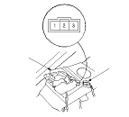

Trunk Latch Switch Test
Open the trunk lid.
Disconnect the 3P connector (A) from the trunk lid latch (B).
Check for continuity between the No. 2 and No. 3 terminals.
There should be continuity with the trunk lid latch unlatched (trunk open).
There should be no continuity with the trunk lid latch latched (trunk closed).
If the continuity is not as specified, replace the trunk lid latch switch.
